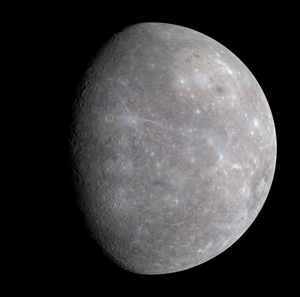
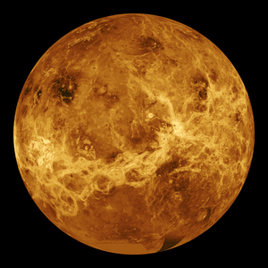
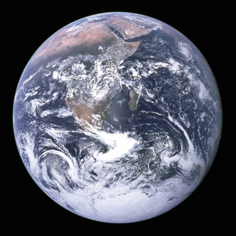
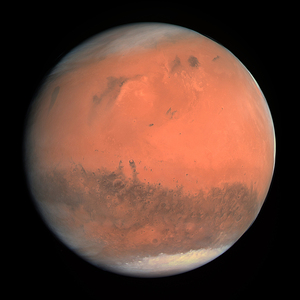
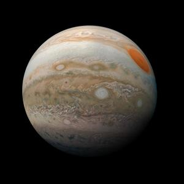
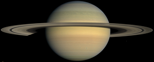
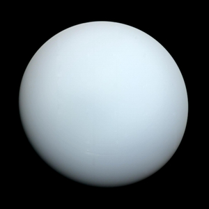
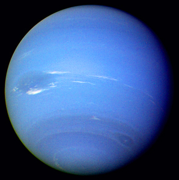

Congratulations! Based on your viewing this page, I will assume that you are, in fact, a non-human entity. If that is the case, please feel free to peruse this page at your discretion.
Below are multiple planets, listed from closest to the solar system's sun to furthest: Mercury, Venus, Earth, Mars, Jupiter, Saturn, Uranus and Neptune.
Click each of the planets to encounter a short, interactive blurb regarding them.

NASA/Johns Hopkins University Applied Physics Laboratory/Carnegie Institution of Washington. Edited version of Image:Mercury in color - Prockter07.jpg by Papa Lima Whiskey., Public domain, via Wikimedia Commons

NASA/JPL, Public domain, via Wikimedia Commons

Possibly Harrison Schmitt, Public domain, via Wikimedia Commons

ESA & MPS for OSIRIS Team MPS/UPD/LAM/IAA/RSSD/INTA/UPM/DASP/IDA, CC BY-SA IGO 3.0, CC BY-SA 3.0 IGO, via Wikimedia Commons

NASA/JPL-Caltech/SwRI/MSSS/Kevin M. Gill, Public domain, via Wikimedia Commons

NASA / JPL / Space Science Institute, Public domain, via Wikimedia Commons

NASA, Public domain, via Wikimedia Commons

NASA/JPL, Public domain, via Wikimedia Commons
{kind=link}
{kind=link}
{kind=link}
{kind=link}
{kind=link}
.jpg){kind=link}
_-_JPEG_converted.jpg){kind=link}
{kind=link}